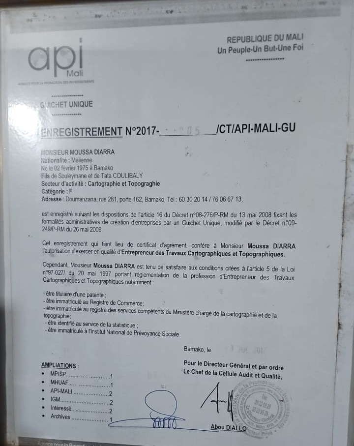

À propos de TSW
Découvrez l'entreprise TOPO SABUGNOUMA WASSA, habilitée et agréée pour l'ensemble des travaux de cartographie et de topographie au Mali.
Une entreprise malienne spécialisée dans les métiers de la géographie et du territoire
TOPO SABUGNOUMA WASSA (TSW) est une entreprise malienne spécialisée dans les travaux de cartographie et de topographie. Enregistrée auprès de l'Agence pour la Promotion des Investissements au Mali (API-Mali), elle est légalement habilitée en qualité d'Entrepreneur des Travaux Cartographiques et Topographiques.
TSW intervient à Bamako et dans les différentes régions du Mali pour accompagner les particuliers, les entreprises, les professionnels du BTP et les acteurs de l'aménagement dans leurs besoins en relevés de terrain, en cartographie et en études géospatiales.
Notre approche repose sur la rigueur technique, la précision des mesures et une communication claire avec nos clients. Chaque mission est conduite avec le soin et le professionnalisme que mérite votre investissement.
Cadre Légal & Certificat d'Agrément
L'exercice de la profession de topographe au Mali exige une régularité stricte. TSW dispose de son certificat d'enregistrement officiel conférant l'habilitation légale d'exercer.

Enregistrement officiel de l'entreprise
En vertu de l'article 16 du Décret n°08-276/P-RM du 13 mai 2008 fixant les formalités administratives de création d'entreprises par un Guichet Unique, et de la Loi n°97-027 régissant la profession, cet enregistrement officiel confère à Monsieur Moussa DIARRA l'autorisation d'exercer en qualité d'Entrepreneur des Travaux Cartographiques et Topographiques.
Moyens de mesure et bureau d'études cartographique
Pour assurer un haut niveau de précision, TSW mobilise du matériel topographique moderne et des logiciels de traitement spatial éprouvés.
De l'acquisition sur le terrain par récepteurs GNSS et station totale jusqu'au calcul, à l'habillage cartographique et à la modélisation sous SIG (QGIS, AutoCAD, Covadis), chaque maillon de la chaîne de production fait l'objet d'un contrôle de cohérence rigoureux.
- Relevés GNSS / GPS différentiel et stations totales de haute précision
- Imagerie drone & photogrammétrie pour les grandes parcelles et lotissements
- Traitement informatique sous logiciels SIG et DAO de référence
Nos valeurs professionnelles
TSW s'engage à fournir des prestations de qualité, dans le respect des règles de l'art et des attentes de ses clients.
Rigueur méthodologique
Chaque mission est préparée, planifiée et exécutée selon une démarche structurée, pour garantir des résultats cohérents et fiables.
Précision des relevés
La précision est au cœur de nos travaux. Nous apportons le plus grand soin à la collecte et au traitement des données géographiques.
Transparence et communication
Nous communiquons de manière régulière et honnête avec nos clients, à toutes les étapes de la mission.
Respect du périmètre
Les livrables remis correspondent exactement à ce qui a été défini et validé lors de la commande.
Écoute active
Nous prenons le temps de comprendre vos attentes et les contraintes spécifiques de chaque projet avant d'intervenir.
Professionnalisme
Une attitude professionnelle en toutes circonstances : ponctualité, réactivité et respect scrupuleux des engagements pris.
Vous avez un projet nécessitant un topographe qualifié ?
Contactez l'équipe de TSW pour échanger sur vos besoins et recevoir une proposition adaptée sous 24 à 48 heures.